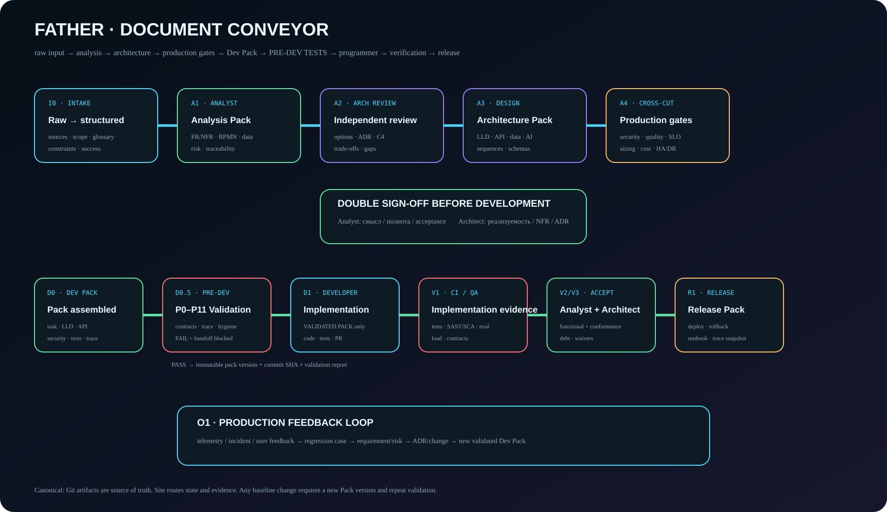

Canonical workflow
От сырого входа до Development Pack
Сайт показывает не просто документы, а их движение между ролями: источник → аналитик → архитектор → production-gates → программист → проверка → релиз.
Visual pipeline
Document Conveyor

Double sign-off
Перед программистом — две независимые проверки
Analyst sign-off
Смысл требований сохранён, сценарии полны, acceptance criteria тестируемы, источники и assumptions разделены.
Architect sign-off
Решение реализуемо, NFR измеримы, интерфейсы и данные согласованы, риски/trade-offs/ADR зафиксированы.
Runtime view
Этапы и документы
Карточки строятся из document-conveyor.json и показывают документы + назначенных агентов.